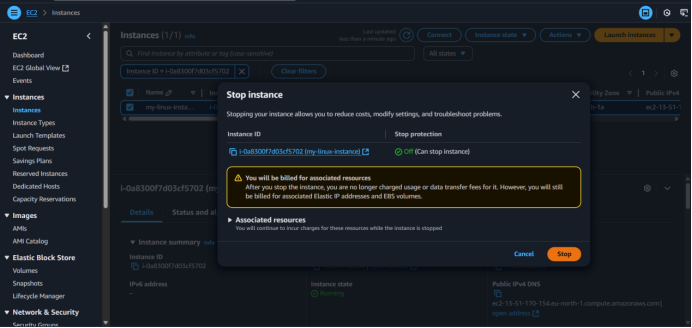

Assignment #1: Creating an Instance in AWS
Student Information
Name: Divyanshu T. Nikhade
Division: ET1
Roll No: ET1-03
PRN: 202401070026
AWS EC2 Deployment Process
Step 1: Searching for the EC2 Service
- Navigate to the AWS Management Console and search for "EC2" in the search bar at the top.
Searching for EC2 Service
Step 2: Launch an Instance
- Click on the "Launch Instance" button to begin the EC2 instance setup process.

Launch Instance Button
Name and Tags
- Enter a descriptive name for your instance (e.g., "Linux Instance")
Configuring Instance Name and Tags
Selecting Amazon Machine Image (AMI)
- Search for "Amazon Linux" in the AMI marketplace
- Select the official Amazon Linux AMI
Instance Type
- Select t2.micro instance type (free tier eligible)
Network Settings
- Use default VPC and subnet
- Enable "Auto-assign Public IP"
- Create a new security group allowing SSH traffic (port 22)
Configure Storage
- Accept the default storage (8 GB) or modify as needed
Launch Instance
- Review your instance configuration and click "Launch Instance" to create it
Reviewing and Launching Instance
Step 3: Instance Launched Successfully
- Verify that your instance is running in the EC2 dashboard
Step 4: Connect to the Instance
- Select your instance and click "Connect" to access the connection options

Connecting to Instance
Step 5: Connect Using EC2 Instance Connect
- Choose the EC2 Instance Connect option
- Click "Connect" to open a terminal in your browser
Using EC2 Instance Connect
Step 6: Linux Terminal Access
- You will now see the Linux terminal in your browser
- You are connected to your AWS Linux instance
Linux Terminal Access
Step 7: Executing Linux Commands
- Execute the following basic Linux commands to test your instance:
# Display "Hello World" message
echo "Hello World"
# Create an empty file
touch testfile.txt
# Create a new directory
mkdir test_directory
# Change directory to the new directory
cd test_directory
# Display current date and time
date
# List files in the current directory
ls -la
# Display network configuration
ifconfigExecuting Basic Linux Commands
Date Command Execution
Step 8: Exiting the Terminal
- Type `exit` and press Enter to close the terminal connection
exitStep 9: Stopping the Instance
- Return to EC2 Dashboard
- Select your instance
- Click "Instance state" → "Stop instance"
- Confirm by clicking "Stop"

Stopping the Instance
Step 10: Terminating the Instance
- Once stopped, select your instance again
- Click "Instance state" → "Terminate instance"
- Confirm termination by clicking "Terminate"
Terminating the Instance
Step 11: Terminated Instance
- The instance state will change to "Shutting down" and then "Terminated"
- Once terminated, you will no longer be charged for the instance
Instance Termination Complete
Important Notes
- Remember to always terminate your instances when not in use to avoid unnecessary charges
- Save your work before terminating the instance as all data will be lost
- No key pair is required when using EC2 Instance Connect for this basic setup
- The commands demonstrated are basic Linux commands to verify your instance functionality